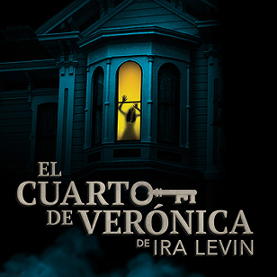
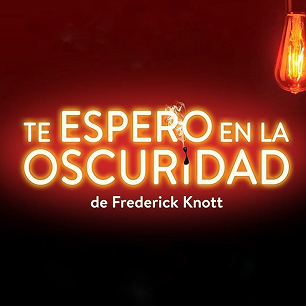
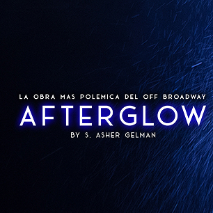
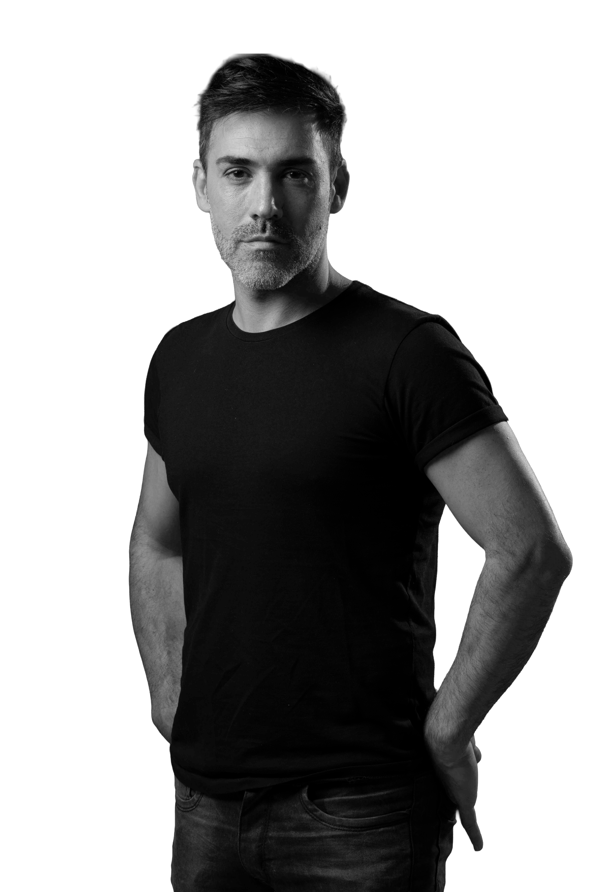

01VER PROYECTO ↗Thriller psicológico · Ira Levin
El Cuarto de Verónica
Una historia de suspenso que se convirtió en uno de los proyectos de mayor continuidad del equipo.
Buenos Aires · Producción teatral
Creamos obras con identidad, rigor artístico y vocación de encuentro con el público.
Seleccionamos historias, construimos equipos y desarrollamos cada proyecto desde la primera lectura hasta su encuentro con la audiencia. Nos interesa el teatro que deja una marca y puede crecer sin perder su identidad.
01 / Nuestro trabajo
Cuatro proyectos ya forman parte del recorrido de Hagamos Equipo. Dos nuevas producciones se encuentran en desarrollo para el cierre de 2026.

01VER PROYECTO ↗Thriller psicológico · Ira Levin
Una historia de suspenso que se convirtió en uno de los proyectos de mayor continuidad del equipo.

02Suspenso · Frederick Knott
Una nueva apuesta por el suspenso clásico, desarrollada con una mirada contemporánea y una fuerte identidad de puesta.

03Drama contemporáneo · S. Asher Gelman
Deseo, vínculos e intimidad en un texto internacional que amplía el universo temático de la productora.
ARCHIVO / PRODUCCIÓN
Proyecto escénico
Una producción que se incorporará al archivo visual y documental de Hagamos Equipo con su ficha completa, imágenes, equipo y recorrido.
Próximamente
Dos nuevas producciones se encuentran en desarrollo para fin de año. Este espacio funcionará como adelanto editorial y luego se transformará en sus respectivas páginas de proyecto.
02 / Recorrido
Los números aparecen sólo cuando cuentan algo: continuidad, alcance y capacidad de sostener proyectos en el tiempo.
producciones en archivo
temporadas de El Cuarto de Verónica
funciones del proyecto más longevo
nuevas producciones en desarrollo
03 / Cómo trabajamos
Hagamos Equipo acompaña cada proyecto como una producción integral: selección del texto, construcción del equipo, desarrollo artístico, puesta, comunicación y crecimiento de la obra.
Buscamos textos capaces de generar conversación y sostener una propuesta escénica con identidad.
Traducimos una idea en una experiencia: espacio, ritmo, actuación, lenguaje visual y vínculo con el espectador.
Reunimos a las personas adecuadas para cada proyecto y construimos una lógica de trabajo colaborativa y profesional.
Prensa, materiales, nuevas plazas y temporadas acompañan el crecimiento sin convertir la escala comercial en el punto de partida.

04 / Dirección artística & producción
Selecciona proyectos. Construye equipos. Desarrolla producciones. Lleva historias a escena.
Su trabajo atraviesa distintos roles —producción, dirección, actuación y desarrollo de textos— y sostiene una mirada que combina criterio artístico, oficio y capacidad de gestión.
Conocer el perfil de la productora →05 / Prensa
Críticas, notas y referencias forman parte del archivo de cada producción. La nueva web permitirá recorrerlas por obra y acceder a las fuentes originales.
Afterglow abre una conversación contemporánea sobre los vínculos, el deseo y las nuevas formas de construir pareja.Ver archivo de prensa ↗
El Cuarto de Verónica consolidó una continuidad poco habitual para un thriller y convirtió la permanencia en parte de su identidad.Ver referencias ↗
Te espero en la oscuridad profundiza una línea de trabajo donde tensión, actuación y precisión de puesta funcionan como un mismo sistema.Explorar críticas ↗
06 / Contacto
Alianzas, coproducciones, proyectos, salas y nuevas oportunidades de circulación.
Escribinos ↗